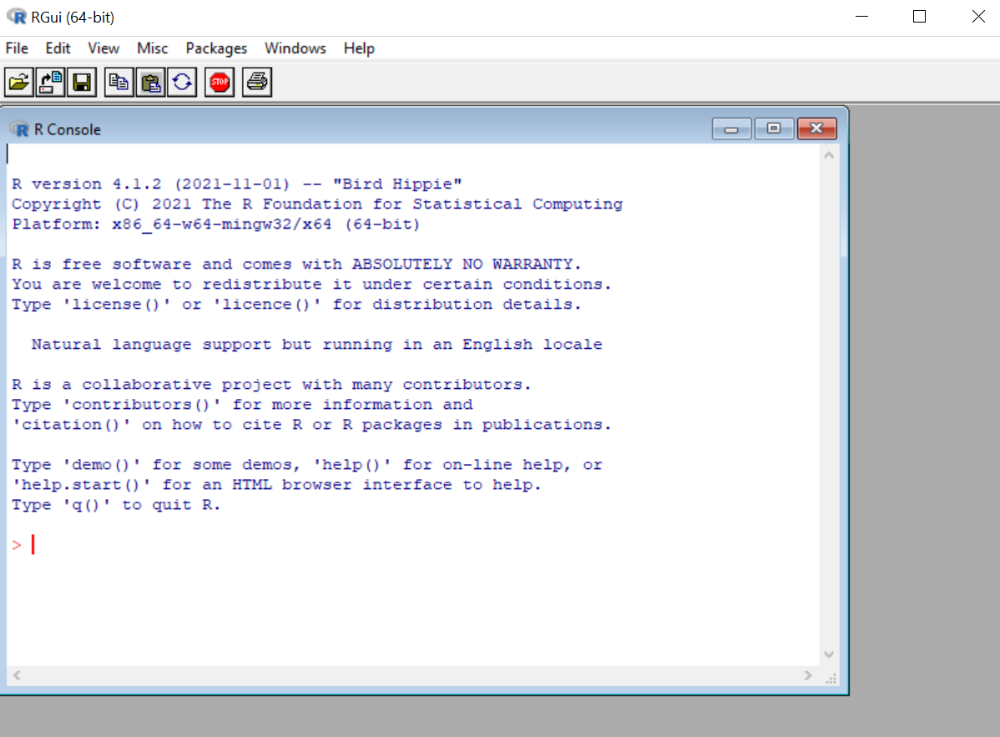
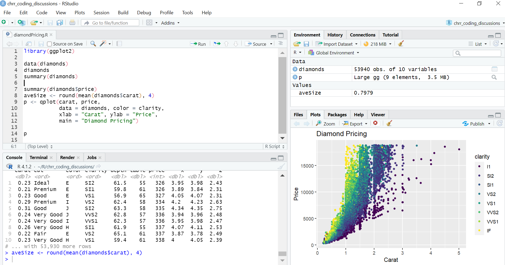
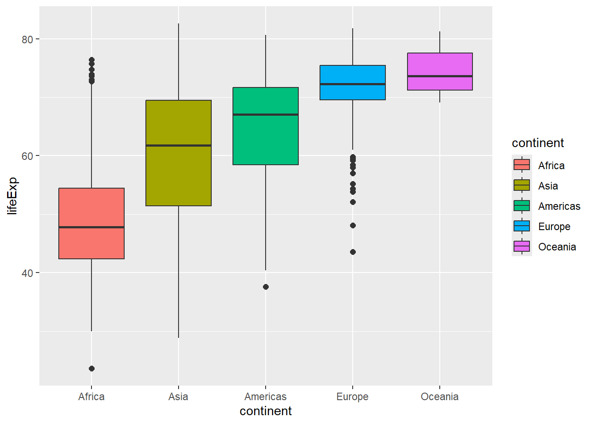
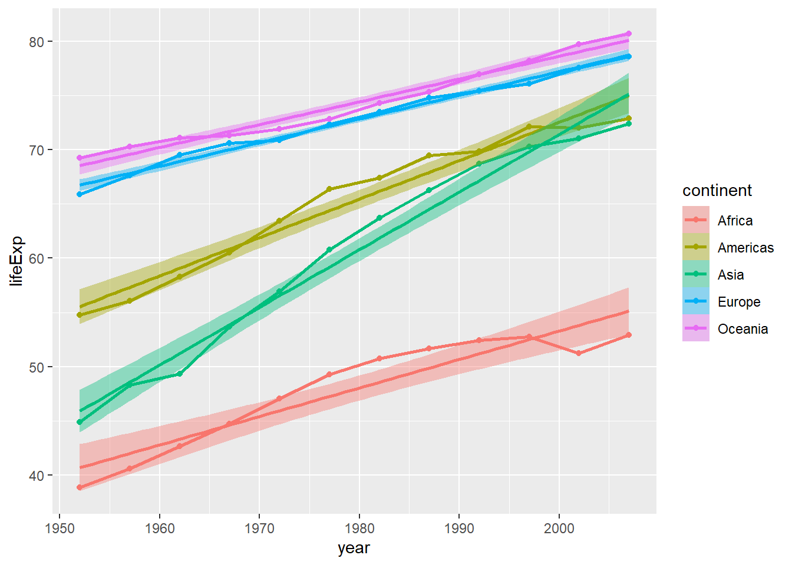

Demo
- Script
- R markdown
- App
Plan
- General introduction
- Styles
- Visualization
- R markdown
- Git
Why R?
Programming language developed by statisticians for data analysis
Free and open-source
Easy to get help: A large, growing, and active community of R users
Numerous resources for learning and asking questions
Excellent graphics and visualization tools, even dynamic Shiny
Broad range of data analysis tools/packages
Easy to generate reproducible reports
Easy to integrate with other tools
The R console
- Basic interaction with R is through typing in the console
- This is the terminal or command-line interface
RStudio is highly recommended
- Download R: https://cran.r-project.org/
- Then download RStudio: http://www.rstudio.com/
RStudio is an IDE for R
RStudio has 4 main windows (i.e., ‘panes’):
- Source
- Console/Terminal/Render/Jobs
- Environment/History
- Files/Plots/Packages/Help/Viewer

Styles/Dialects/Fashions/Flavors/Syntaxes
Base R: what you get when you open up R for the first time; stable
Tidyverse: readability and flexibility
data.table: fast and concise
Base R vs Tidyverse
gapminderdataset
library(gapminder)
dim(gapminder)[1] 1704 6head(gapminder)# A tibble: 6 × 6
country continent year lifeExp pop gdpPercap
<fct> <fct> <int> <dbl> <int> <dbl>
1 Afghanistan Asia 1952 28.8 8425333 779.
2 Afghanistan Asia 1957 30.3 9240934 821.
3 Afghanistan Asia 1962 32.0 10267083 853.
4 Afghanistan Asia 1967 34.0 11537966 836.
5 Afghanistan Asia 1972 36.1 13079460 740.
6 Afghanistan Asia 1977 38.4 14880372 786.glimpse(gapminder)Rows: 1,704
Columns: 6
$ country <fct> "Afghanistan", "Afghanistan", "Afghanistan", "Afghanistan", …
$ continent <fct> Asia, Asia, Asia, Asia, Asia, Asia, Asia, Asia, Asia, Asia, …
$ year <int> 1952, 1957, 1962, 1967, 1972, 1977, 1982, 1987, 1992, 1997, …
$ lifeExp <dbl> 28.801, 30.332, 31.997, 34.020, 36.088, 38.438, 39.854, 40.8…
$ pop <int> 8425333, 9240934, 10267083, 11537966, 13079460, 14880372, 12…
$ gdpPercap <dbl> 779.4453, 820.8530, 853.1007, 836.1971, 739.9811, 786.1134, …- subset rows for United States - base R:
gapminder[gapminder$country == "United States", ]# A tibble: 12 × 6
country continent year lifeExp pop gdpPercap
<fct> <fct> <int> <dbl> <int> <dbl>
1 United States Americas 1952 68.4 157553000 13990.
2 United States Americas 1957 69.5 171984000 14847.
3 United States Americas 1962 70.2 186538000 16173.
4 United States Americas 1967 70.8 198712000 19530.
5 United States Americas 1972 71.3 209896000 21806.
6 United States Americas 1977 73.4 220239000 24073.
7 United States Americas 1982 74.6 232187835 25010.
8 United States Americas 1987 75.0 242803533 29884.
9 United States Americas 1992 76.1 256894189 32004.
10 United States Americas 1997 76.8 272911760 35767.
11 United States Americas 2002 77.3 287675526 39097.
12 United States Americas 2007 78.2 301139947 42952.subset(gapminder, country == "United States")# A tibble: 12 × 6
country continent year lifeExp pop gdpPercap
<fct> <fct> <int> <dbl> <int> <dbl>
1 United States Americas 1952 68.4 157553000 13990.
2 United States Americas 1957 69.5 171984000 14847.
3 United States Americas 1962 70.2 186538000 16173.
4 United States Americas 1967 70.8 198712000 19530.
5 United States Americas 1972 71.3 209896000 21806.
6 United States Americas 1977 73.4 220239000 24073.
7 United States Americas 1982 74.6 232187835 25010.
8 United States Americas 1987 75.0 242803533 29884.
9 United States Americas 1992 76.1 256894189 32004.
10 United States Americas 1997 76.8 272911760 35767.
11 United States Americas 2002 77.3 287675526 39097.
12 United States Americas 2007 78.2 301139947 42952.- tidyverse
gapminder %>% filter(country == "United States")# A tibble: 12 × 6
country continent year lifeExp pop gdpPercap
<fct> <fct> <int> <dbl> <int> <dbl>
1 United States Americas 1952 68.4 157553000 13990.
2 United States Americas 1957 69.5 171984000 14847.
3 United States Americas 1962 70.2 186538000 16173.
4 United States Americas 1967 70.8 198712000 19530.
5 United States Americas 1972 71.3 209896000 21806.
6 United States Americas 1977 73.4 220239000 24073.
7 United States Americas 1982 74.6 232187835 25010.
8 United States Americas 1987 75.0 242803533 29884.
9 United States Americas 1992 76.1 256894189 32004.
10 United States Americas 1997 76.8 272911760 35767.
11 United States Americas 2002 77.3 287675526 39097.
12 United States Americas 2007 78.2 301139947 42952.Piping
tidyverse pipe: %>%
native pipe (since R4.1.0): |>
Enables chaining: the output of a previous function becomes the first argument of the next function
Example: sort continents by their total population in 2007
gapminder %>%
filter(year == 2007) %>%
group_by(continent) %>%
summarise(totalPop = sum(pop)) %>%
arrange(desc(totalPop))# A tibble: 5 × 2
continent totalPop
<fct> <dbl>
1 Asia 3811953827
2 Africa 929539692
3 Americas 898871184
4 Europe 586098529
5 Oceania 24549947gapminderdataset- \(\to\) then filter rows for year 2007
- \(\to\) then group rows by continent
- \(\to\) then summarize population for each continent
- \(\to\) then arrange rows with descending total population
Assignment operator
Most variables are created with the assignment operator, <- or =
x <- 3
print(x)[1] 3x = 3
print(x)[1] 3there are differences
short-cut for
<-:Alt+-in RStudio
ggplot2
- boxplot: distributions of life expectancy by continent
gapminder %>%
mutate(continent = reorder(continent, lifeExp, FUN=median)) %>%
ggplot(aes(x=continent, y=lifeExp, fill=continent)) +
geom_boxplot(outlier.size=2)
- line/point plot
gapminder %>%
group_by(continent, year) %>%
summarise(lifeExp=median(lifeExp)) %>%
ggplot(aes(x=year, y=lifeExp, color=continent)) +
geom_line(size=1) +
geom_point(size=1.5) +
geom_smooth(aes(fill=continent), method="lm")`summarise()` has grouped output by 'continent'. You can override using the
`.groups` argument.Warning: Using `size` aesthetic for lines was deprecated in ggplot2 3.4.0.
ℹ Please use `linewidth` instead.`geom_smooth()` using formula = 'y ~ x'
R Markdown
Allows the user to integrate R code into a report
When data changes or code changes, so does the report
No need to copy-and-paste graphics, tables, or numbers
Creates reproducible reports
- Anyone who has your R Markdown (.Rmd) file and input data can re-run your analysis and get the exact same results (tables, figures, summaries)
Can output report in HTML (default), Microsoft Word, or PDF